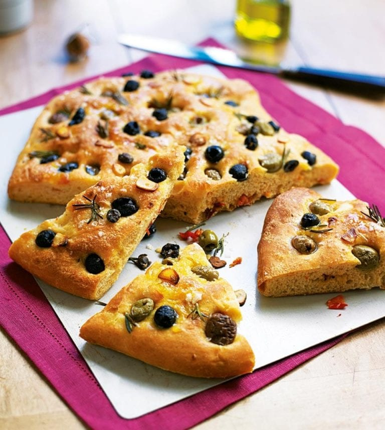

FOCACCIA
O potrawie
Focaccia – potrawa kuchni włoskiej, jest to rodzaj pieczywa, będącego podstawą pizzy.
Każdy region Włoch może się pochwalić inną odmianą focaccia, od suchego, z solą, ziołami (rozmaryn, szałwia) polanego oliwą ciasta, do pulchnego z suszonymi pomidorami i oliwkami. Zazwyczaj podawane na ciepło.
Focaccia serwowana jest jako przystawka oraz jako dodatek do innych potraw.

Składniki
- 25g świeżych drożdży
- 300ml ciepłej wody
- 500g mąki pszennej typ 500/600 lub tortowej
- 1 cebula
- 2 ząbki czosnku
- oliwa
- 1 łyżka soli
- 1 łyżeczka cukru
- szczypta czosnku niedźwiedziego lub rozmarynu
- szczypta tymianku lub oregano
- szczypta bułki tartej lub semoliny
Opcjonalnie, według uznania:
- oliwki
- kapary
- pomidorki koktajlowe
Przygotowanie
- Drożdże skruszyć do kubka, dodać 120ml ciepłej wody (pół szklanki), 1 łyzeczkę cukru i 2-3 łyżki mąki. Wymieszać i odstawić w ciepłe miejsce do wyrośnięcia na dosłownie chwilkę (ok. 3-5 minut)
- W miedzyczasie do reszty mąki dosypać łyżkę soli, dodać 2 łyżki oliwy i wymieszać.
- Gdy drożdże podrosną wlać zaczyn do mąki i dodać pozostałe 180ml wody. Mieszać masę łyżką na stolnicy albo w misce. Starać się mieszać masę jak najdłużej łyżką, po czym przejść do ugniatania ręcznego.
Ugniatać przez kolejne 10-15 minut, gdy ciasto bedize wyrobione wyłozyć do miski i odstawić do wyrastania przez 40 minut.
- Podczas, gdy ciasto rośnie pokroić w piórka cebulę oraz drobno posiekać czosnek.
- Po wyrośnięciu obsypać blachę bułką tartą lub semoliną, wyłożyć na tym ciasto i polać oliwą. Na wyłożonym cieście zrobić wgłębienia palcami, w tych miejscach umieścić pokrojoną cebulę, czosnek i obsypać majerankiem lub czosnkiem niedźwiedzim.
Wedle uznania można także dodać oliwki, kapary czy pomidorki koktajlowe. Odstawić na kolejne 40 minut do wyrastania.
- Po ok. 20 minutach zacząć rozgrzewać piekarnik na 200oC korzystając z górnej i dolnej grzałki. Po rozgrzaniu i wyrośnięciu ciasta piec przez 20 minut.
- Po wyciągnięciu koniecznie polać oliwą. Znany wielu amatorom kuchni włoskiej Gennaro Contaldo mawiał
You must feed focaccia, it is hungry for good oil
.
Koszty (wyłączając oliwę oraz przyprawy)
|
Cena |
| 1kg mąki |
1.49 zł |
| 100g drożdży |
0.79 zł |
| 1 cebula |
1.30 zł |
| 1 główka czosnku |
1.10 zł |
|
| Opcjonalnie: |
| Słoik oliwek |
4.60 zł |
| Słoik kapar |
6.40 zł |
Alergeny
- Focaccia
- Jedynym alergenem jest gluten
Newsletter
Aktywuj subskrypcję aby dostawać regularnie nowe przepisy na włoskie specjały.
Autor strony
Krzysztof GAJ
Dolnośląska Szkoła Wyższa
Wrocław